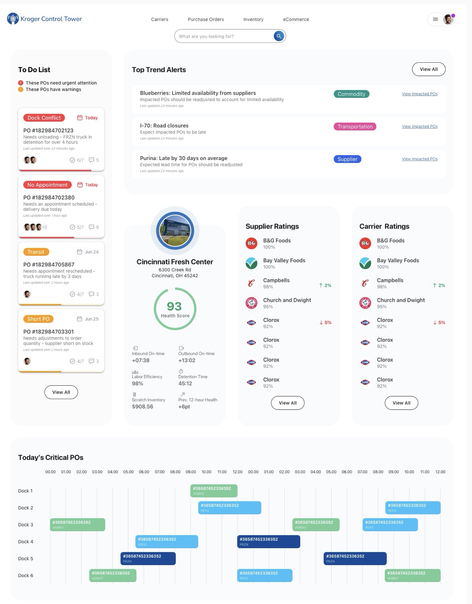
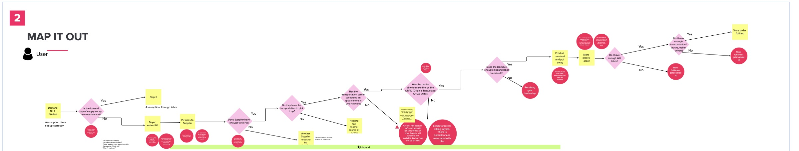
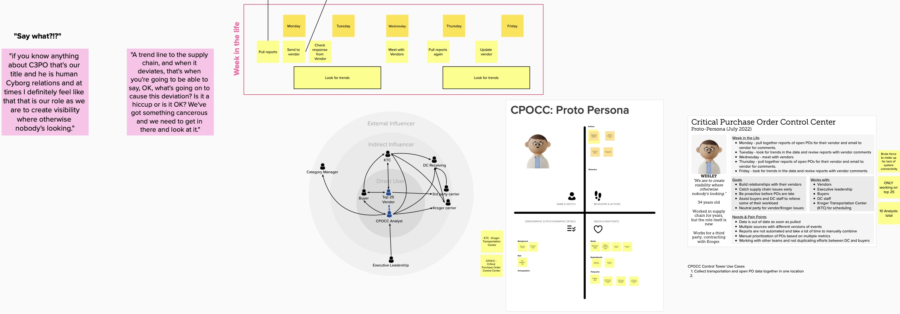
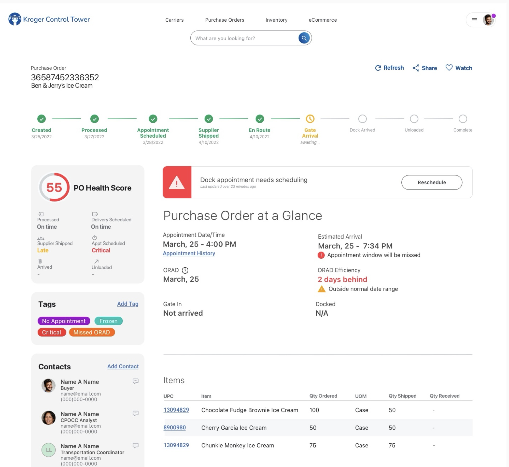
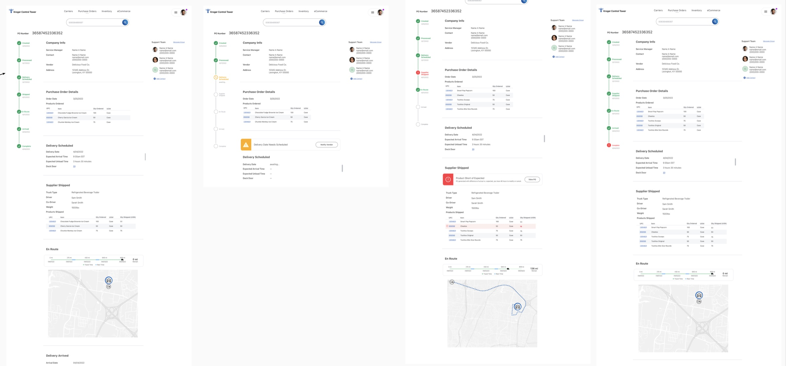
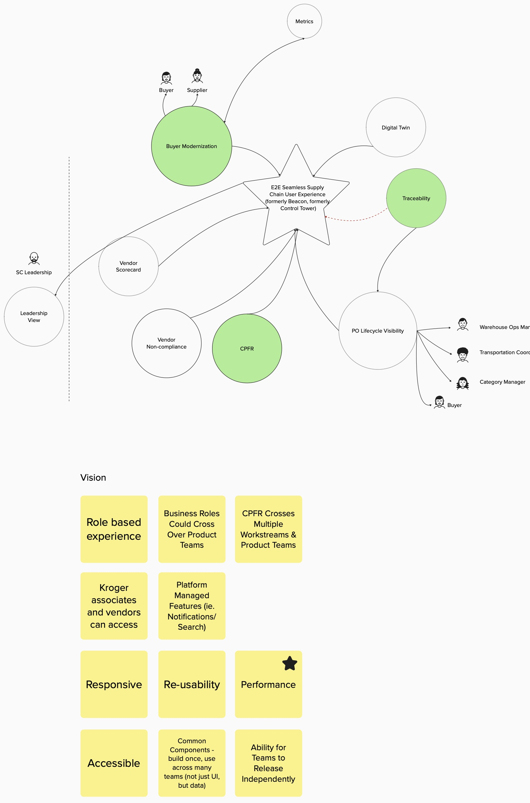
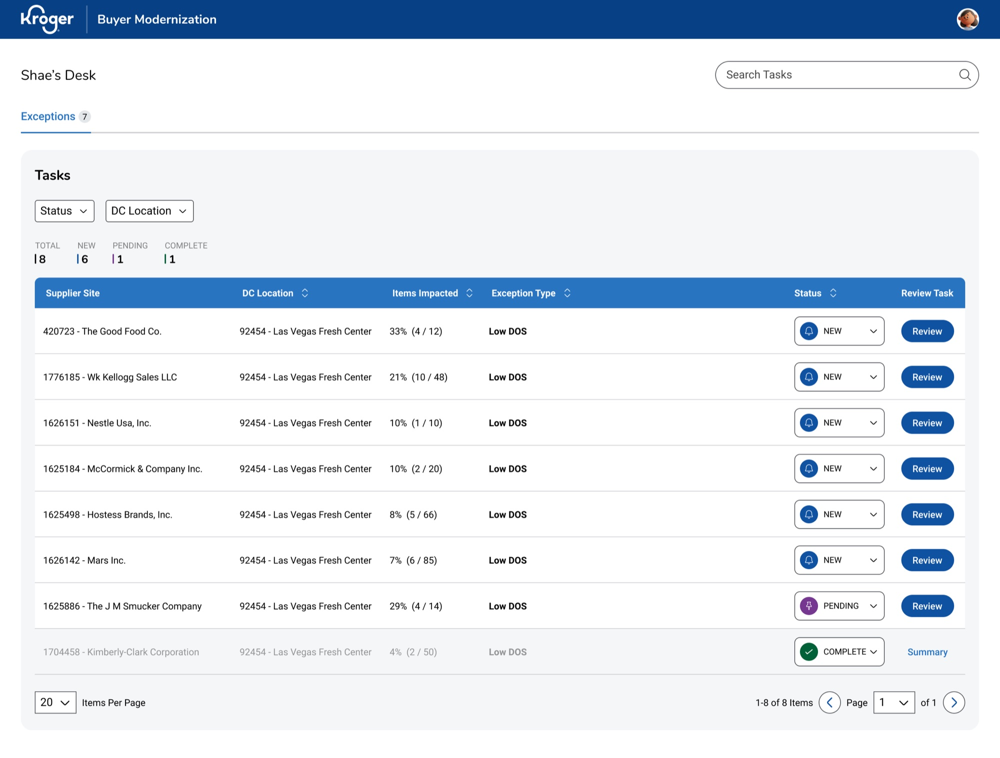
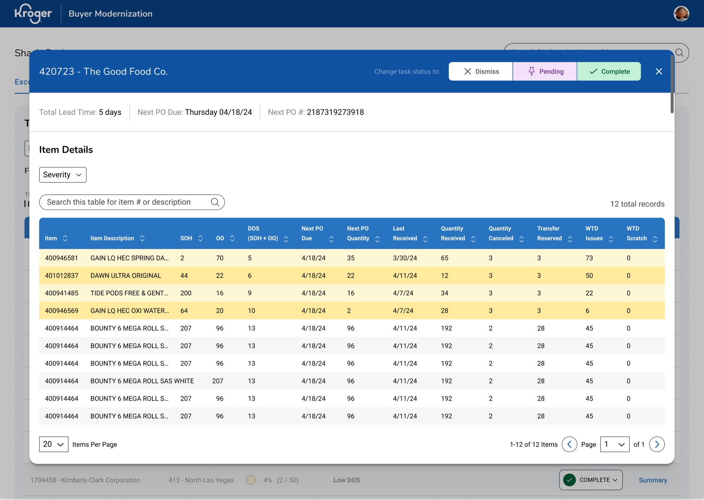
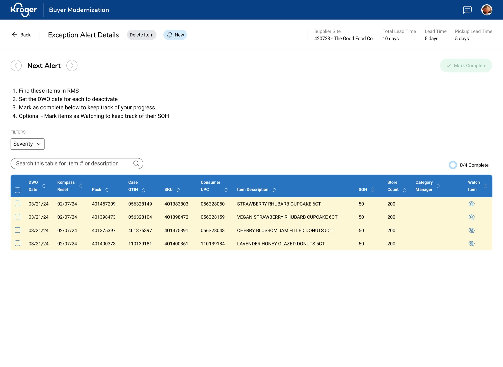
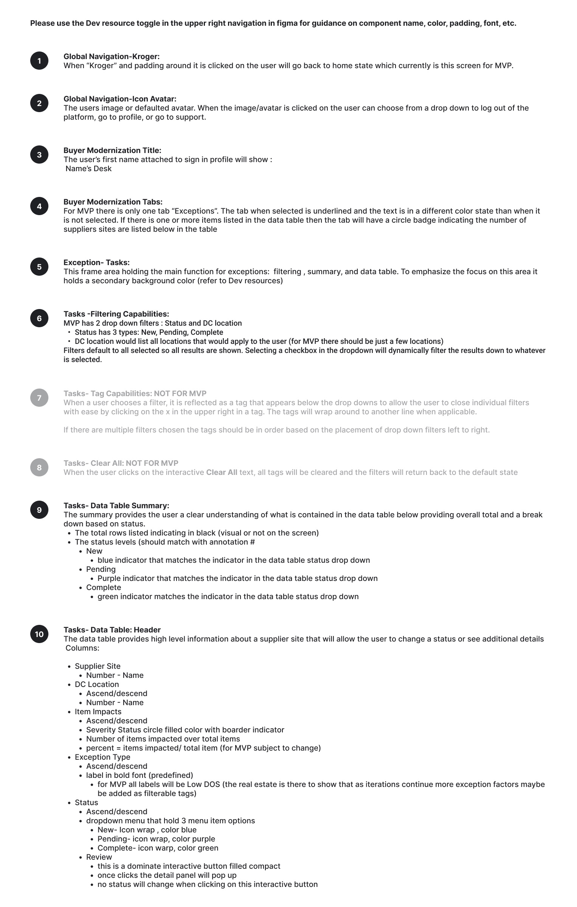

Kroger · Supply chain
Beacon: from a white paper to a supply chain platform, in two tries
Kroger’s supply chain ran on spreadsheets and firefighting. I turned a white paper about a “control tower” into a vision leadership could fund, narrowed it to a first MVP, and then used what we learned when it stalled to restart the platform around buyers.
- Role
- Design manager (Senior Manager, Product Design). Led discovery, vision and strategy; owned the solution approach and directed two senior product designers.
- Timeline
- 2022–2025: vision in 2022, analyst MVP in 2023, Beacon 2.0 and the buyer MVP in 2024
- Team
- Grew from 3 people to as many as three product teams at its peak, with PMs, a scrum master, designers, data engineers, an architect, developers and data science partners
- Methods
- Design sprint, contextual inquiry, proto-personas, story mapping, vision prototype, IA, success metrics

A supply chain no one could see
Coming out of the pandemic, Kroger’s supply chain was in rough shape. Only about half of purchase orders reached distribution centers on their scheduled day, and stores were getting only about half of the cases they ordered. Every day brought late trucks, short shipments and recalls, and the information needed to respond was spread across too many systems.
A white paper written for supply chain leadership proposed a “control tower” to fix it, built around three capabilities:
The white paper’s promise
- SenseOne version of the truth, instead of a dozen tools, dashboards and “sources of truth.”
- PredictSee the downstream effect of a problem before it reaches a store shelf.
- PrescribeRoute a standard response to the person who can act on it.
I was brought in to turn that paper into something buildable. The working assumption was a big data layer with a dashboard on top, a “digital twin” of the whole network. The risk, as we put it in our own strategy session, was boiling the ocean.
A five-day sprint to find a starting point
I planned and facilitated a five-day design sprint with subject matter experts from known problem areas, such as distribution center receiving and vendor ordering. We built on the white paper instead of starting over. We set a long-term goal and sprint questions, mapped the network end to end, interviewed experts, then sketched, decided and storyboarded.
The map changed the question. Most of the pain was concentrated inbound, between the supplier and the distribution center, and nearly all of it ran through one object.
The purchase order is the backbone of inventory moving through the supply chain.
Roughly 4 in 10 purchase orders needed someone to investigate them, so the question shifted from “how do we see everything?” to “how do we make every PO visible to everyone who depends on it?”


Finding the first user
A temporary team of about six analysts, the Critical Purchase Order Control Center, was assigned vendors deemed critical and monitored every one of their purchase orders. Because the work was all manual, they could only cover the top 25 vendors. We interviewed and observed 5 of them and built a proto-persona around a line one of them said:
“We are to create visibility where otherwise nobody’s looking.”
Their week was the same loop, 52 weeks a year:
An analyst’s week, before
- MondayPull reports of open POs, split them by vendor and email each vendor for comments.
- TuesdayMerge vendor replies, look for trends and revise the reports.
- WednesdayMeet with vendors.
- ThursdayPull fresh reports and email vendors again.
- FridayMerge replies and revise reports. Repeat.
The data was out of date the moment it was exported. Sources disagreed, and analysts prioritized POs by hand across several metrics. Two findings shaped everything after:
- The problem was connection, not visibility. Kroger already had plenty of dashboards. People needed the right data for their role, in one place, with the people they had to work with.
- Many roles touched one PO. Buyers, schedulers, analysts, distribution center coordinators and vendors each saw a different slice of the same order. That pointed to a role-based platform, not a single dashboard.


Key decisions
1. Start with the purchase order, not the whole network
The ask was a network-wide health view. I pushed for one high-value process where the pain and the data were concentrated, so we could prove value quickly. We gave up some of the white paper’s scale to ship something people would use.
2. Design for one role first, inside a platform built for many
Analysts were the beachhead: a small team, acute pain and a measurable workflow. I designed the information architecture so other roles and product teams could plug in later without a redesign.
Role-based information architecture
| Level | What lives there |
|---|---|
| Universal top navigation Same for everyone | My Dashboard, Track a PO, Look up inventory, search, alerts. One way to find any PO or item, whatever your job. |
| Role side navigation “The heart of the role-based experience” | The modules your role needs, such as buying, forecasting, warehouse appointments or transportation. If you have one primary role, you land straight in it. |
| Shared capabilities Built once, reused | Product teams contribute modules, like PO tracking or warehouse appointments, that other roles can reuse or adapt instead of rebuilding. |
3. Sense before predict and prescribe
The white paper sold prediction. But you can’t predict a late truck until you trust the data on where trucks are and know what normal looks like. We planned the roadmap as crawl, walk, run: first a trustworthy view and history, then alerts on key exceptions, then role-based recommended actions. That meant a less flashy MVP, but one that didn’t promise intelligence the data couldn’t support.
4. Give leadership a vision to react to, not a requirements document
We built a clickable vision prototype and a story-driven showcase. It asked: what if we could sense, predict and prescribe? What if every role had one place to work? Leadership needed something to rally behind and fund, not a feature list.
The vision prototype
The prototype followed a single PO from creation to receipt, tracking where it was, how healthy it was and who needed to act. Details came out of working sessions with business owners. For example:
- Exceptions first. Don’t make anyone scroll through 1,000 POs. Surface the 75 with problems.
- A health score per PO, with the milestone driving it, so “late” has a reason attached.
- Contacts and updates on the PO, so the analyst, buyer, carrier and vendor work from the same page instead of an email thread.


Shipping the first MVP
The vision did its job: leadership funded a dedicated product team, and at its peak Beacon had three. The first release was PO Visibility for analysts. It gave them one view of open POs and their status and let them email vendors from inside the tool, replacing the export, merge and email cycle. Two senior product designers did the detailed UI under my direction.
Before launch, I worked with the team to define what success would mean:
We also built a lightweight feedback survey into the product, to catch bugs, data-accuracy problems and ease-of-use ratings from day one.
What testing told us
We ran a usability study with analysts on the delivered MVP. Two of three completed all 15 tasks, and the third completed 12. The biggest concern wasn’t the design. It was speed: two of three worried about how responsive the system was, which became the team’s top fix. Analysts also asked for:
- More PO statuses, such as missed appointments and “no appointment”
- Bulk commenting, email templates and free-text notes to vendors
- Summary metrics for distribution centers and vendors
Research pointed to the next steps: help analysts book delivery appointments inside the tool, use data science to flag POs at risk of being late, and share performance metrics with vendors.
Why the first MVP stalled
Analysts used PO Visibility for real work, and people on the team described it as “solving real-world problems.” But in mid-2023 the team was shelved, and most of its members moved to a new end-to-end supply chain data team. The reasoning was that Beacon couldn’t reach its potential until the data foundation underneath it existed.
I facilitated a post-mortem with the original stakeholders to turn frustration into a plan a future team could use. The themes were consistent:
- The original executive sponsor left early, and ownership changed hands.
- The value estimate was never tied to a real ROI model. When dates slipped, nobody could answer the ROI question.
- Technology ended up driving business strategy. The business needed to own the vision.
- The analyst problem was real, but it wasn’t the business’s biggest problem. Analysts were easy to ship to, but few business partners were waiting on the result.
The second time: Beacon 2.0
In 2024 Beacon was funded again. The vision hadn’t changed: sense, predict and prescribe across the supply chain. What changed was how we chose where to start. We needed one problem, felt by one user group, whose business partners had both the funding and the interest to solve it. And it had to touch roles up and downstream, so we could extend it when the time came.
What we changed after the post-mortem
| Lesson from the first MVP | How Beacon 2.0 applied it |
|---|---|
| Pick the first user for strategic value, not just ease | Buyers. Every buyer was moving to Oracle’s new merchandising system (RMS), and the business was funding that move. Gaps in RMS put a problem in front of every buyer who migrated. |
| Solve for one role, but design for the others | Buyers create the PO that analysts, distribution centers and vendors act on later. A role-based platform shell, with a shared top navigation and a side navigation for each role, let new modules plug in without a redesign. |
| Make the invisible work visible | Data and integration progress was reported alongside design progress, so stakeholders could see the foundation being built, not just screens. |


What buyers told us
We had a head start. In late 2022 our designers had interviewed the first buyers already working in RMS, a mix of fresh, center store and fulfillment center buyers. A buyer’s main job is simple to describe: see what needs to be ordered, write the purchase order, submit it. In practice, each step had extra work built into it.
A buyer’s real day in RMS
- Check what to orderRecommendations were based on averages that missed spikes, so buyers cross-checked them against their own spreadsheets and reports.
- Write and submit the PONo bulk editing. Items were edited one at a time, then approved, submitted and saved with three separate buttons, order after order.
- Follow upRMS didn’t flag problems until after an order was submitted, so buyers canceled and rewrote orders to protect their fill rate.
“If you talk to 10 buyers, you’d probably find 10 different versions of this report.”
It came down to three themes: buyers couldn’t trust the data, the data they needed lived in too many places, and the process had little automation. The research also showed that buyers were measured on fill rate, which depended on suppliers, forecasting and transportation as much as on them. That connected their problem to the rest of the supply chain Beacon was meant to cover.
Buyer Modernization
Buyer Modernization was the first module on the Beacon 2.0 platform, a greenfield tool for the 200+ buyers migrating to RMS. As design manager I didn’t own the day-to-day pixels. I owned the solution approach: which buyer problems we solved first, how the tool fit beside RMS, and how it fit into the larger platform. Two senior product designers did the detailed design under my direction.
Exceptions, not another reporting tool
The tempting answer was to rebuild the RMS screens buyers struggled with. We didn’t. RMS was the system of record, and competing with it would have doubled the work. Instead, Buyer Modernization did the cross-checking buyers were doing by hand in spreadsheets. It flagged the supplier and distribution center combinations that needed attention, explained why, recommended an action, and then sent the buyer into RMS to act.
How a buyer works an exception
- See what needs attentionOne dashboard of exceptions by supplier and distribution center, with the share of items affected, sorted so the biggest impact comes first.
- Understand whyAlert details bring together what buyers used to look up in separate reports: lead times, the next PO due, and the affected items.
- Act in RMSA recommended action, such as a rush order, with steps for doing it in RMS.
- Track progressMark items complete or watch them, so the list replaces the personal spreadsheet.


One alert at a time
We shipped alert types one at a time, each tied to a problem from the research:
- Low days of supply came first. Buyers had been calculating days of supply by hand from on-hand and on-order numbers they couldn’t see in RMS. The alert did the math and showed which items were at risk.
- New and deleted items came next. Item setup errors caused order problems that RMS only flagged after a PO was submitted. The alert walked buyers through finding each item in RMS, setting its deactivation date and tracking their progress.

The pattern stayed the same with each new alert type: dashboard, details, action in RMS, track progress. That kept each release small, gave buyers one routine to learn, and made the module easy to extend on the shared platform. The designers wrote annotated specs for each release, covering states, behavior and component guidance, so engineering could build without a round of follow-up questions.

The MVP launched to the first group of buyers moving to RMS. During the rollout, our team embedded with buyers to support training and change management, and brought what we saw back to leadership to inform decisions about the rollout. The tool got several updates after launch. Program funding ended in 2025.
What I’d carry forward
- A vision gets you funded; a business owner keeps you funded. Tie each release to a metric a named business owner already reports on, before building.
- Start where the business is already moving. The RMS migration gave Beacon 2.0 urgency and partners that the first MVP never had.
- Pick a first user whose work connects to everyone else’s. Buyers start the PO lifecycle, so solving for them laid groundwork for the roles that follow.